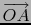
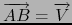

suivant: Plan et droites parallèles
monter: Les lignes
précédent: Le segment en 3D
Table des matières
Index
Le vecteur en 3D : vecteur
Voir aussi : 9.10.5 pour la géométrie plane.
vecteur, en géométrie 3D, a comme arguments soit :
- une liste représentant les coordonnées d'un point A.
vecteur définit et dessine le vecteur
 où O est l'origine du repère.
- deux points A, B ou deux listes représentant les coordonnées de ces
points.
vecteur définit et dessine le vecteur

- un point A (ou une liste représentant les coordonnées de ce point)
et un vecteur V (définition récursive).
vecteur définit et dessine le vecteur
tel que
.
On tape :
vecteur([1,2,3])
On obtient :
Le tracé du vecteur d'origine [0,0,0] et d'extrémité [1,2,3]
On tape :
vecteur(point([-1,0,0]),point([0,1,2]))
Ou on tape :
vecteur([-1,0,0],[0,1,2])
On obtient :
Le tracé du vecteur d'origine [-1,0,0] et d'extrémité [0,1,2]
On tape :
V:=vecteur([-1,0,0],[0,1,2])
On tape :
vecteur(point([-1,2,0]),V)
Ou on tape :
vecteur([-1,2,0],V)
On obtient :
Le tracé du vecteur d'origine [-1,2,0] et d'extrémité [0,3,2]
Remarque
En calcul formel, on travaille sur la liste des coordonnées des vecteurs que
l'on obtient avec la commande coordonnees (cf 10.11.4).
suivant: Plan et droites parallèles
monter: Les lignes
précédent: Le segment en 3D
Table des matières
Index
Documentation de giac écrite par Renée De Graeve